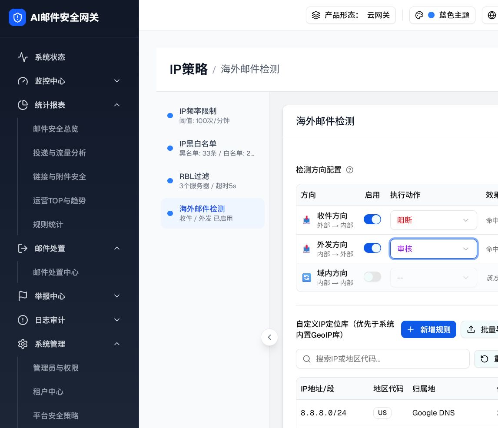

触发路径：平台/唯一管理员进入海外邮件检测 → 切换任一方向 Switch → 已启用方向可选择动作。多租户租户管理员不渲染本层。
可交互预览
海外邮件检测 · 收件 已启用
| 方向 | 启用 | 执行动作 | 效果预览 |
|---|
域内邮件通常使用RFC1918私网地址（10.x/172.16.x/192.168.x），无法映射到真实地理位置，开启可能导致误判
当前三个方向均未启用，海外邮件检测模块处于禁用状态。如需完全关闭，建议前往策略流水线关闭本模块。
组件交互明细
| 组件 | 输入/触发 | 状态迁移 | 禁用与反馈 |
|---|---|---|---|
| 方向 Switch | 点击收件/外发/域内行的 Switch | 仅修改对应 enabled；其他方向状态保持 | 关闭后 Select disabled 且显示 --，预览改为“跳过海外检测” |
| 动作 Select | 在已启用行选择隔离/审核/阻断/丢弃 | 仅修改该方向 action | 方向未启用时不可展开；预览立即显示新动作 |
| 摘要 | 任一方向状态变化 | 按收件、外发、域内顺序拼接已启用项 | 无启用项时显示“海外邮件检测未启用” |
| 域内警告 | internal.enabled=true | 条件渲染 RFC1918 警告 | 关闭域内立即移除 |
| 全关闭提示 | 三个 enabled 均为 false | 条件渲染禁用信息 | 重新启用任一方向立即移除 |
真实页面截图



DOM 对比
| 检查项 | demo DOM | 本页预览 | 结果 |
|---|---|---|---|
| 动作列表 | 4 个 option：隔离/审核/阻断/丢弃 | 4 个 option | 一致 |
| 禁用方向 | combobox disabled，值 -- | select disabled，值 -- | 一致 |
| 全关闭文案 | 完整文本匹配 | 完整文本匹配 | 一致 |